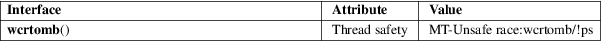

wcrtomb − convert a wide character to a multibyte sequence
Standard C library (libc, −lc)
#include <wchar.h>
size_t wcrtomb(char *restrict s, wchar_t wc, mbstate_t *restrict ps);
The main case for this function is when s is not NULL and wc is not a null wide character (L'\0'). In this case, the wcrtomb() function converts the wide character wc to its multibyte representation and stores it at the beginning of the character array pointed to by s. It updates the shift state *ps, and returns the length of said multibyte representation, that is, the number of bytes written at s.
A different case is when s is not NULL, but wc is a null wide character (L'\0'). In this case, the wcrtomb() function stores at the character array pointed to by s the shift sequence needed to bring *ps back to the initial state, followed by a '\0' byte. It updates the shift state *ps (i.e., brings it into the initial state), and returns the length of the shift sequence plus one, that is, the number of bytes written at s.
A third case is when s is NULL. In this case, wc is ignored, and the function effectively returns
wcrtomb(buf, L'\0', ps)
where buf is an internal anonymous buffer.
In all of the above cases, if ps is NULL, a static anonymous state known only to the wcrtomb() function is used instead.
The wcrtomb() function returns the number of bytes that have been or would have been written to the byte array at s. If wc can not be represented as a multibyte sequence (according to the current locale), (size_t) −1 is returned, and errno set to EILSEQ.
For an explanation of the terms used in this section, see attributes(7).

C11, POSIX.1-2008.
POSIX.1-2001, C99.
The behavior of wcrtomb() depends on the LC_CTYPE category of the current locale.
Passing NULL as ps is not multithread safe.
mbsinit(3), wcsrtombs(3)